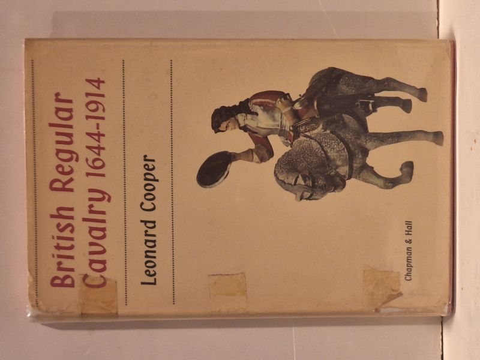

British Regular Cavalry 1644-1914
Leonard Cooper · Chapman & Hall, London, 1965

C$20.0 · Very Good condition
First edition (Chapman & Hall Ltd, London, 1965). Stated 'First published in Great Britain 1965'. Printed in Great Britain by The Sherval Press Ltd, London, Hertford and Harlow. Hardcover with original pictorial dust jacket featuring a colour illustration of a British cavalryman with horse. 216 pages with illustrated endpapers showing development of cavalry uniform. Boards clean, binding tight; jacket shows tape-residue patches on the front panel and light edge wear (priced for jacket condition).
Details
- Publisher: Chapman & Hall, London, 1965
- Binding: Hardcover
- Edition: First Edition
- Condition: Very Good
- Dust jacket: Good
- Category: Military